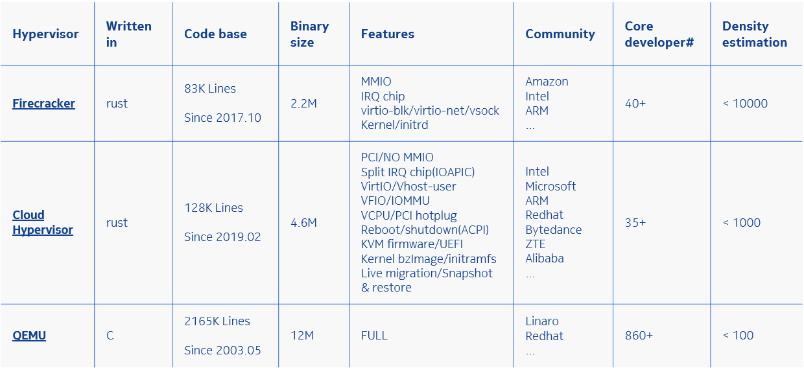
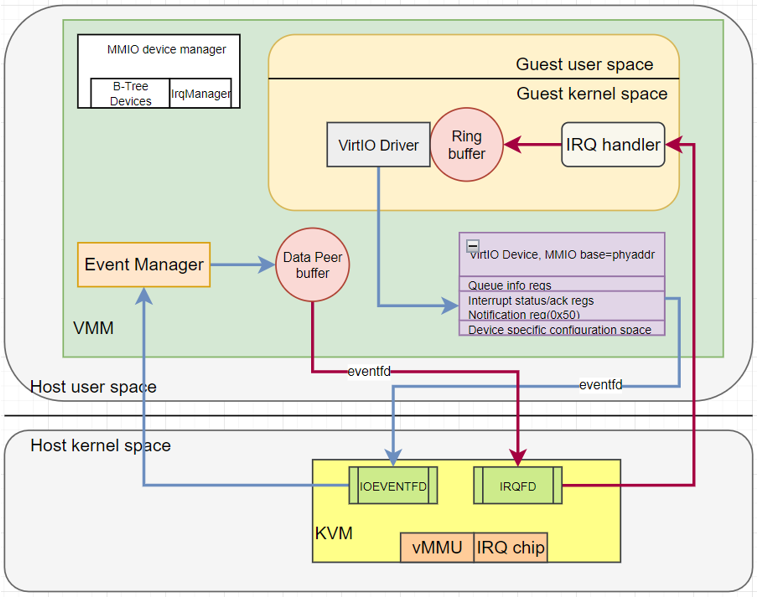
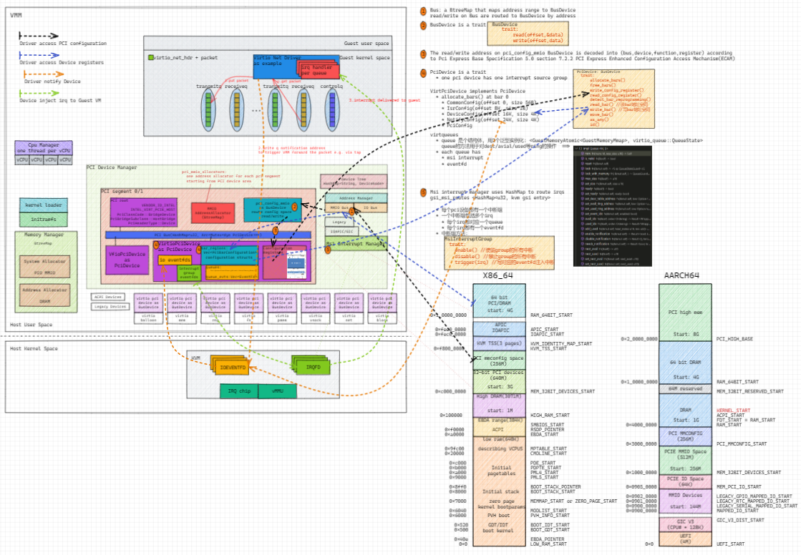
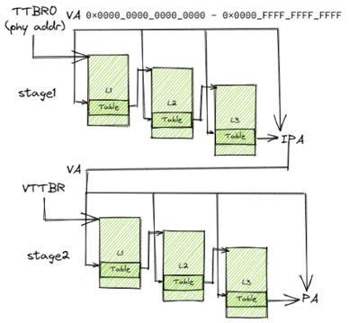
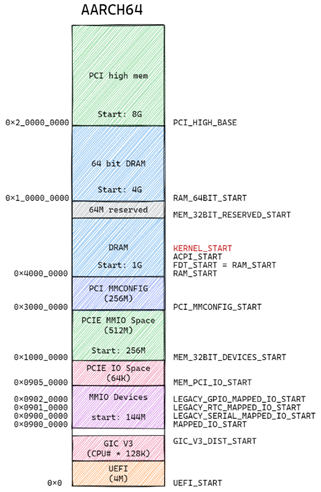
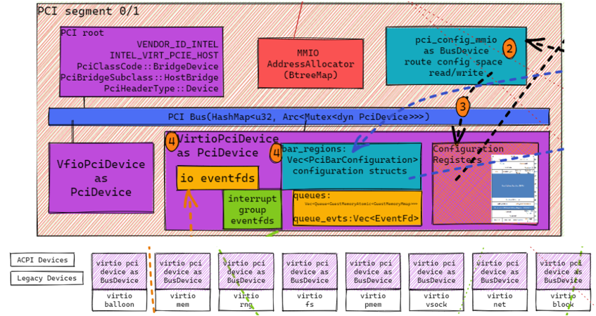
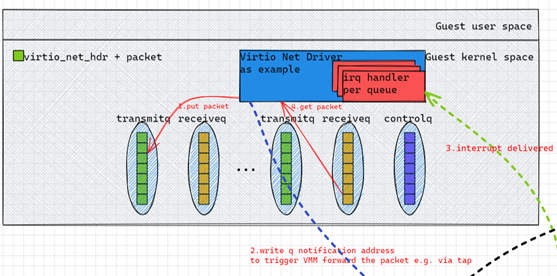

介绍Firecracker Cloud-hypervisor以及virtio基础概念. 转录自我的PPT
- VMM brief
- Virtio devices
- MMIO based virtio devices
- PCI based virtio devices
- Memory Manager in cloud-hypervisor
- Device Manager
- Virtio Net example
1. VMM brief

2. Virtio devices
Virtio is a protocol that defines how guest drivers talk to virtual devices. See the spec v1.2.
Virtio devices can be exposed by PCI or MMIO
- PCI: a device with PCI vendor ID
0x1AF4is a virtio device, device configuration structures are mapped to PCI configuration header BAR 0- Common configuration: feature bits, queue num, queue size, queue select, queue address
- Notifications: driver writes to notification address triggers an event to device
- ISR Status: not used when msi-x is enabled
- Device-specific configuration: different virtio types(net, block…) have different layouts
- PCI configuration access: provide an alternative way to access above registers other than BAR
- MMIO: a region of predefined register layout starting at base address, with compatible = "virtio,mmio“ in DTS, which can be “discovered” by guest driver.
- All registers are little endian
3. MMIO based virtio devices

4. PCI based virtio devices

5. Memory Manager in cloud-hypervisor
- Defines VM physical memory layout, just like a new SOC
- Uses BtreeMap to record memory ranges
- Uses
KVM_SET_USER_MEMORY_REGIONioctl to map the layout to VMM virtual memory. (VM_PAtoHOST_VA) - When guest VM access memory, 2 stages translate happens(e.g. AARCH64):
VM_VA->VM_PAHOST_VA->HOST_PA
- Mainly focus on
- PCI MMIO space
- PCI MMCONFIG space
- AARCH64
VM_PAlayout

6. Device Manager

- Manages all PCI devices
- Virtio PCI devices
- VFIO PCI devices
- Normally has 2 PCI segments
- Segment 0 is default
- Each PCI segment has
- PCI root, vendor ID intel, device ID
VIRT_PCIE_HOST - Uses HashMap to map bdf to PciDevice
- A pci config mmio BusDevice to route mm config access to corresponding PciDevice
- A MMIO address Allocator
- And many VirtioPciDevices
- PCI root, vendor ID intel, device ID
7. Virtio Net example

- Virtio net has at least 3 virtqueues
- Transmitq
- Receiveq
- Controlq
- Driver sends and receives packet
- driver puts a packet into transmitq
- Notifies device by writing the notification address of the queue
- Kvm delivers the notification
- VMM handles the packet, typically by forwarding it to tap
- VMM receives the reply packet from tap
- VMM injects interrupt through KVM
- Guest irq handler receives the packet
- Guest driver handles the received packet and hands over it to upper network stack.
- The content in the virtqueue is virtio_net_hdr + packet data